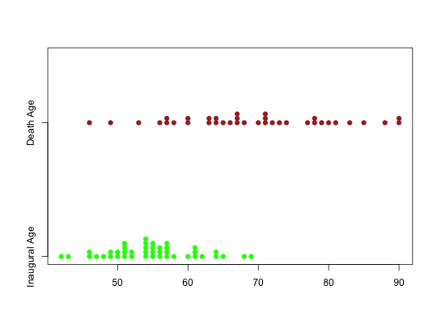

Data for Exercise 1.126
A data frame with 43 observations on the following 5 variables.
A. B.
C. D. F. G. G. W. H. J.
L. M. R. T. U. W. Z.Adams Arthur
Buchanan Bush Carter Cleveland Clinton
Coolidge Eisenhower Fillmore Ford
Garfield Grant Harding Harrison Hayes
Hoover Jackson Jefferson Johnson Kennedy
Lincoln Madison McKinley Monroe Nixon
Pierce Polk Reagan Roosevelt Taft
Taylor Truman Tyler VanBuren Washington
WilsonARK
CAL CONN GA IA ILL KY MASS
MO NC NEB NH NJ NY OH
PA SC TEX VA VTKitchens, L. J. (2003) Basic Statistics and Data Analysis. Duxbury
str(Presiden)#> 'data.frame': 43 obs. of 5 variables: #> $ firs : Factor w/ 16 levels "A.","B.","C.",..: 6 9 13 9 9 9 1 11 15 9 ... #> $ Presiden: Factor w/ 37 levels "Adams","Arthur",..: 36 1 19 23 25 1 18 35 15 34 ... #> $ Birt : Factor w/ 20 levels "ARK","CAL","CONN",..: 19 8 19 19 19 8 17 14 19 19 ... #> $ Inaugage: int 57 61 57 57 58 57 61 54 68 51 ... #> $ Deathage: int 67 90 83 85 73 80 78 79 68 71 ... #>attach(Presiden)The following object is masked from package:BSDA: Presidentable(Birt)#> Birt #> ARK CAL CONN GA IA ILL KY MASS MO NC NEB NH NJ NY OH PA #> 1 1 1 1 1 1 1 4 1 2 1 1 2 4 7 1 #> SC TEX VA VT #> 1 2 8 2 #>pie(table(Birt))stripchart(x=list(Inaugage,Deathage),method="stack", group.names=c("Inaugural Age","Death Age"),col=c("green","brown"),pch=19)detach(Presiden)